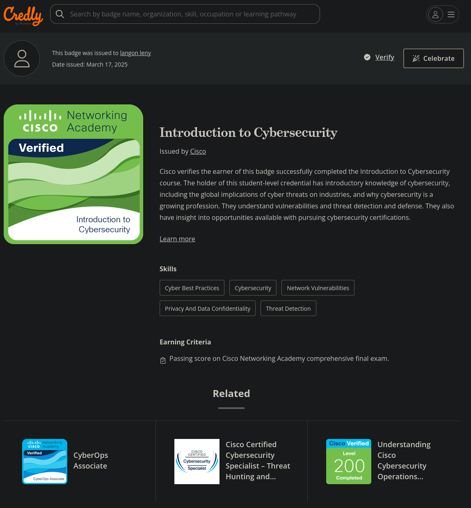

Mes Compétences BUT
Réaliser un développement d'application
Description officielle : Concevoir, développer et tester des applications informatiques en respectant les bonnes pratiques de développement.
Ma maîtrise
Au cours de cette première année de BUT, j'ai acquis une solide compréhension du cycle complet de développement d'une application. La SAÉ 1.01 m'a confronté dès le début à la programmation concrète d'un jeu de Sokoban en langage C : j'ai dû implémenter la gestion d'un plateau de jeu en mémoire (tableau 2D), la lecture/écriture de fichiers, la logique de déplacement du personnage et la poussée de caisses, en respectant des consignes précises et un cahier des charges structuré. J'ai appris à découper mon code en fonctions claires et réutilisables, à gérer les cas limites (murs, bords du plateau) et à tester méthodiquement chaque fonctionnalité. En parallèle, la SAÉ 1.05 m'a permis de développer un site web touristique complet en HTML, CSS et JavaScript, en partant d'un cahier des charges client, en passant par une charte graphique et des maquettes, jusqu'au développement responsive. Ces deux projets m'ont appris à transformer un besoin fonctionnel en code opérationnel.
Preuves (Traces)
Sokoban V1 & V2 — Jeu en C
Développement complet d'un jeu Sokoban en langage C : chargement de fichiers .sok, affichage coloré du plateau dans le terminal, gestion des déplacements (z/q/s/d), poussée de caisses, détection de victoire, sauvegarde de partie. La V2 a ajouté le zoom d'affichage (3 niveaux d'échelle), la mémorisation des déplacements et la fonction d'annulation (undo).
Site Web touristique
Conception et réalisation en équipe d'un site vitrine statique pour un pays, comprenant une page d'accueil, des pages de lieux incontournables, de personnages emblématiques et d'œuvres artistiques. Le site a été développé en version desktop puis rendu responsive avec des media queries, le tout versionné sous Git.
Optimiser des applications informatiques
Description officielle : Analyser et optimiser des applications pour améliorer leurs performances et leur efficacité.
Ma maîtrise
L'optimisation algorithmique est devenue un véritable réflexe au fil de l'année. La SAÉ 1.02 m'a d'abord appris à écrire un Sokoban « autonome » capable de rejouer des solutions, puis à les optimiser en détectant et supprimant les déplacements inutiles et les séquences de mouvements qui ne font pas progresser la partie. Ce travail de suppression de séquences redondantes m'a fait comprendre concrètement l'importance de la complexité algorithmique. En semestre 2, la SAÉ 2.02 a poussé cette réflexion bien plus loin : j'ai implémenté en Python un algorithme de backtracking (DFS) pour résoudre le problème du Tour du Cavalier sur un échiquier, puis un solveur de Picross combinant force brute et propagation de contraintes. J'ai dû mesurer les performances (benchmarks) et comparer théoriquement les complexités des différentes approches, ce qui m'a permis de comprendre pourquoi une approche « intelligente » peut être des milliers de fois plus rapide qu'une exploration exhaustive.
Preuves (Traces)
Sokoban Autonome — Optimisation de solutions
Programmation d'un Sokoban qui rejoue automatiquement des suites de déplacements (fichiers .dep), puis optimisation en supprimant les déplacements non joués et les séquences inutiles (aller-retour sans pousser de caisse). Comparaison de la taille des solutions avant et après optimisation.
Exploration algorithmique — Cavalier & Picross
Implémentation du problème du Tour du Cavalier par DFS + backtracking, puis d'un solveur Picross combinant backtracking naïf et propagation de contraintes. Analyse de complexité (O(2^N×M) pour la force brute), benchmarks sur des grilles de taille croissante, et rédaction d'un rapport comparatif des approches.
Administrer des systèmes informatiques communicants complexes
Description officielle : Installer, configurer et maintenir des systèmes informatiques en réseau, en assurant leur bon fonctionnement et leur sécurité.
Ma maîtrise
La SAÉ 1.03 m'a plongé dans l'administration système à travers un projet concret et professionnel : mettre en place une chaîne de traitement automatisée pour un site web du Ministère du Tourisme, en utilisant Docker et des scripts Bash/PHP. J'ai appris à créer et orchestrer des conteneurs Docker (images, volumes, réseau), à écrire des scripts Bash pour automatiser le traitement de fichiers (conversion de formats texte, redimensionnement d'images, tri et filtrage de données CSV), et à gérer la persistance des données entre conteneurs éphémères. Ce projet m'a fait comprendre l'intérêt de l'automatisation : plutôt que de traiter manuellement des fichiers à chaque mise à jour, la chaîne de traitement s'exécutait d'un seul coup, de bout en bout. J'ai également appris à respecter strictement des conventions de nommage et des contraintes de livraison, à l'image d'un environnement professionnel.
Preuves (Traces)
Installation d'un poste de développement
Mise en place de l'environnement Docker : récupération et configuration d'images, écriture de scripts de manipulation de fichiers texte et images, structuration du travail en équipe avec un fichier PARTICIPATION.md pour tracer la contribution de chacun.
Chaîne de traitement automatisée
Conception d'une chaîne complète de traitement de données touristiques : transformation de fichiers Excel en tableaux triés, ajout de données départementales et régionales, génération automatique de PDF, le tout orchestré par des conteneurs Docker éphémères et des scripts Bash.
Gérer des données de l'information
Description officielle : Concevoir, gérer et exploiter des bases de données en garantissant la cohérence et l'intégrité des données.
Ma maîtrise
La SAÉ 1.04 m'a confronté à un cas d'usage réaliste et complexe : concevoir la base de données d'un comparateur d'offres tarifaires de fournisseurs d'électricité. En partant d'un cahier des charges détaillé (gestion des compteurs Linky, créneaux heures creuses/pleines, offres tarifaires multiples, historisation des contrats), j'ai dû réaliser un dictionnaire de données, un diagramme de classes UML, puis traduire ce modèle en schéma relationnel avec le langage Tutorial D. J'ai appris à identifier les entités, les relations (1-N, N-N), à définir des contraintes d'intégrité référentielles et à écrire un script automatisé de création de base de données. Ce projet m'a fait comprendre l'importance de la modélisation rigoureuse avant toute implémentation, et m'a donné une vision concrète de ce que signifie gérer la cohérence de données dans un système complexe.
Preuves (Traces)
Modélisation — Comparateur d'électricité
Analyse du domaine métier (tarification électrique, compteurs Linky, heures creuses/pleines virtuelles), rédaction d'un dictionnaire de données et conception d'un diagramme de classes UML pour structurer les entités (fournisseurs, offres, contrats, relevés de compteurs).
Implémentation en Tutorial D
Traduction du diagramme de classes en schéma relationnel avec Tutorial D : création des relations, définition des contraintes d'intégrité référentielles nommées, écriture d'un script exécutable de bout en bout pour réinitialiser et recréer la base automatiquement. Réalisation d'un graphe des contraintes d'intégrité.
Conduire un projet
Description officielle : Planifier, organiser et suivre un projet informatique en respectant les délais, les ressources et les exigences de qualité.
Ma maîtrise
La conduite de projet a été au cœur de plusieurs SAÉ, et en particulier de la SAÉ 1.05 (site web touristique). Ce projet m'a permis de vivre l'intégralité du cycle de gestion de projet : lecture et analyse d'un cahier des charges client, personnalisation du projet (choix du pays, des lieux, des personnages), création d'une arborescence du site, rédaction du contenu de chaque page, conception d'une charte graphique harmonisée, maquettage sur Figma en version desktop et mobile, puis développement itératif avec deux livrables distincts (version desktop puis responsive). J'ai appris à planifier le travail en équipe, à respecter des dates de livraison, à documenter mes choix et à adapter mon travail aux retours. La SAÉ 1.03 (chaîne Docker) a aussi contribué à cette compétence : la gestion des délais, le suivi de la participation de chaque membre via PARTICIPATION.md, et le respect strict des conventions de nommage m'ont donné une vision concrète de ce que signifie livrer un projet dans les règles.
Preuves (Traces)
Gestion de projet — Site Web touristique
Cycle complet de gestion de projet en équipe : expression des besoins, personnalisation du site (choix du pays, lieux, personnages, œuvres), arborescence du site, contenu des pages, charte graphique, maquettage Figma (desktop + mobile), développement itératif avec deux livrables, versionnage Git, et soutenance finale.
Gestion d'équipe & Livrables — Chaîne Docker
Organisation du travail en équipe de 4 avec répartition des tâches, suivi de la participation via PARTICIPATION.md (pourcentage de contribution de chaque membre), respect strict de conventions de nommage et de dates de livraison imposées, comme dans un cadre professionnel.
Travailler dans une équipe informatique
Description officielle : Identifier ses aptitudes pour travailler dans une équipe, s'intégrer dans un environnement professionnel et communiquer efficacement.
Ma maîtrise
Le travail en équipe a été une constante tout au long de l'année, mais c'est la SAÉ 1.06 qui m'a fait prendre le plus de recul sur cette compétence. Ce projet transversal m'a amené à étudier une organisation internationale sous l'angle de la responsabilité sociétale et environnementale (RSE), en mobilisant des ressources de gestion des organisations, d'économie durable et de communication. J'ai dû réaliser un diagnostic externe complet, rédiger un dossier structuré et présenter oralement le travail de notre équipe. Au-delà de cette SAÉ dédiée, le travail de groupe sur les SAÉ 1.03, 1.04 et 1.05 m'a appris concrètement à répartir les tâches, à communiquer efficacement (via Teams, Git et des réunions régulières), à gérer les conflits de planning et à m'assurer que chaque membre puisse contribuer selon ses forces. J'ai appris à donner et recevoir des retours constructifs, et à m'adapter au rythme et aux compétences de mes coéquipiers.
Preuves (Traces)
Environnement économique & écologique
Étude d'une organisation internationale sous l'angle de la RSE : réalisation d'une fiche de caractéristiques, diagnostic externe complet (analyse de l'environnement économique et écologique), rédaction d'un dossier structuré et présentations orales évaluées. Travail en équipe de 4 avec répartition des recherches et de la rédaction.
Collaboration en équipe sur les projets techniques
Travail collaboratif sur l'ensemble des SAÉ techniques du semestre 1 : répartition des tâches, coordination via Teams et canaux privés, suivi de la participation de chaque membre, versionnage collaboratif avec Git. Apprentissage de la gestion des différences de rythme et des compétences au sein d'un groupe.
Mes Certifications Professionnelles
Validation des acquis : Diplômes et badges certifiants obtenus en dehors ou en complément du cursus académique.
Introduction to Cybersecurity
Certification officielle délivrée par Cisco Networking Academy attestant des connaissances fondamentales en cybersécurité, protection des réseaux et défense des systèmes.
